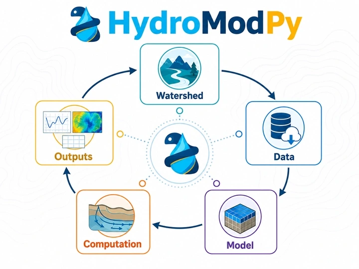

Logiciels
Développements logiciels open source pour la modélisation hydrogéologique, l’analyse des traceurs et l’interprétation des temps de transfert.
HydroModPy
HydroModPy est une boîte à outils Python pour construire, exécuter, calibrer et analyser de façon reproductible des modèles d’aquifères peu profonds à l’échelle des bassins versants.
Le workflow automatise la délimitation des bassins, la préparation des données spatiales et temporelles, la paramétrisation des modèles, les simulations MODFLOW, le suivi de particules et le transport de solutés, ainsi que l’export et la visualisation des résultats.
A. Gauvain et al. (2026) · EGUsphere [preprint] · article en révision pour Hydrology and Earth System Sciences.

PyAge
PyAge est un environnement Python extensible pour interpréter les âges des eaux souterraines à partir de traceurs environnementaux et de modèles à paramètres globaux (Lumped-Parameter Models).
Son architecture sépare les traceurs, les distributions de temps de transit, les opérateurs de convolution et les méthodes de calibration. La calibration bayésienne par Metropolis–Hastings permet d’explorer l’incertitude, les compromis entre paramètres et les limites d’identifiabilité plutôt que de se limiter à une solution déterministe unique.
J.-R. de Dreuzy, S. Leray & J. Marçais (2026) · soumis à Geoscientific Model Development.